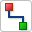
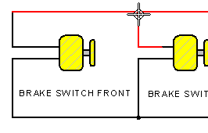

Connector command
The Connector command

creates a continuous series of connectors between 2D elements, such as text objects, blocks, other connectors, dimensions, and other annotations. In this dynamic connector placement mode, you can continue adding connectors until you right-click, click the Select tool, or press the Esc key to exit.
You can change the connector shape, connector line and terminator properties, and flip the orientation of the connector as you are placing it using the options on the Connector command bar.
You can edit the properties of a selected connector using some options on the Connector command bar. You can change the default properties for new connectors in the Connector Properties dialog box. For more information, see Edit a connector.
Connectors and blocks do not require that you maintain relationships, as they have their own built-in intelligence. For this reason, ensure that these options on the command ribbon are deselected: